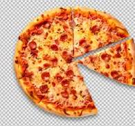

<a href="http://learningwebdesign.com"></a>

<h1>Thêm ảnh SVG cho trang Web</h1>

    <h2>Sử dụng phần tử <strong>IMG</strong></h2>

        


    <h2>Sử dụng phần tử <strong>SVG</strong></h2>

        <p>bác Tèo nướng bánh Pizza:

            <svg xmlns="http://www.w3.org/2000/svg" viewBox="0 0 72 72" width="100" height="100">

            <circle fill="#D4AB00" cx="36" cy="36" r="36"/>

            <circle opacity=".7" fill="#FFF" stroke="#8A291C" cx="36.1" cy="35.9" r="31.2"/>

            <circle fill="#A52C1B" cx="38.8" cy="13.5" r="4.8"/>

            <circle fill="#A52C1B" cx="22.4" cy="20.9" r="4.8"/>

            <circle fill="#A52C1B" cx="32" cy="37.2" r="4.8"/>

            <circle fill="#A52C1B" cx="16.6" cy="39.9" r="4.8"/>

            <circle fill="#A52C1B" cx="26.2" cy="53.3" r="4.8"/>

            <circle fill="#A52C1B" cx="42.5" cy="27.3" r="4.8"/>

            <circle fill="#A52C1B" cx="44.3" cy="55.2" r="4.8"/>

            <circle fill="#A52C1B" cx="54.7" cy="42.9" r="4.8"/>

            <circle fill="#A52C1B" cx="56" cy="28.3" r="4.8"/>

            </svg>
        
        mlem mlem.</p>

    <h2>Sử dụng một <strong>Object</strong></h2>
        <p> Đây là pizza</p>
            
        <object type="image/svg+xml" data="pizza.svg">

             

        </object>

    
<h1>Hiển thị ảnh linh hoạt</h1>

    <h2>Hiển thị ảnh theo độ phân giải màn hình</h2>

        

    <h2>Hiển thị ảnh theo kích thước màn hình (cửa sổ)</h2>

        

    <h2>Sử dụng thuộc tính sizes</h2>
        
        

        


    <h2>Sử dụng thuộc tính sizes</h2> 
    
        <picture>
        
            <source media="(min-width: 1024px)" srcset="icecream-large.jpg">
        
            <source media="(min-width: 760px)" srcset="icecream-medium.jpg">
        
            
        
        </picture>